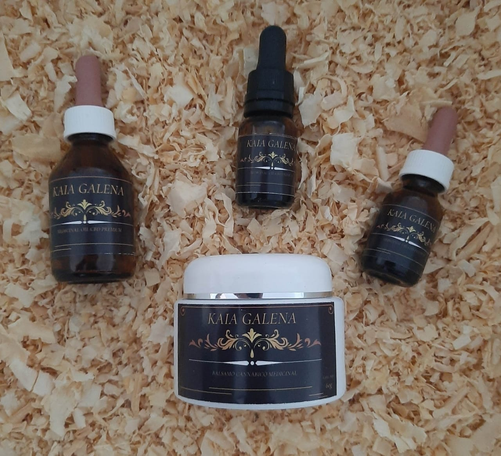

Historias, productos y apliciaciones
Puede matar células y prevenir su propagación. Anticancerígeno, puede inhibir el crecimiento, la invasión y la metástasis de las células tumorales.
Utilizado en mascotas para tratar dolor, ansiedad, náuseas y otros síntomas. Consulte a un veterinario antes de administrarlo.

Atenua problemas como la ansiedad, el estrés, la artritis, las convulsiones y la osteoporosis.

Las capsulas son otro medio empleado para la administracion de CBD.
Alivia el dolor y la inflamación de las migrañas, también puede prevenir los ataques, al mejorar los niveles de serotonina.

Aliado en la salud de la piel y el pelo de los gatos, y aplicado en el tratamiento de cientos de enfermedades y otros síntomas.
El CBD puede tratar y controlar la diabetes tipo 1 y 2. Reduce los niveles de azúcar en la sangre y alivia los síntomas.

El CBD reduce la inflamación y la producción de sebo, y ayuda a cicatrizar las lesiones del acné.
Reduce los síntomas de abstinencia, se aplica como herramienta util y de gran ayuda para dejar de fumar.
Muchas mamás lo aplican.
La naturaleza nos brinda desde siempre, herramientas para estar saludables, sólo es cuestión de elegir la opción mas natural.
La naturaleza nos brinda desde siempre, herramientas para estar saludables, sólo es cuestión de elegir la opción mas natural.
Miles de pacientes que luego de años de ser tratados con medicina tradicional, comienzan con el consumo de aceite de cannabis, notan una enorme evolución favorable en muy poco tiempo.
Francesca Brivio, nos relata su historia con el aceite de cannabis, y te enseña los beneficios que posee el THC, otro compuesto del cannabis, como el CBD.